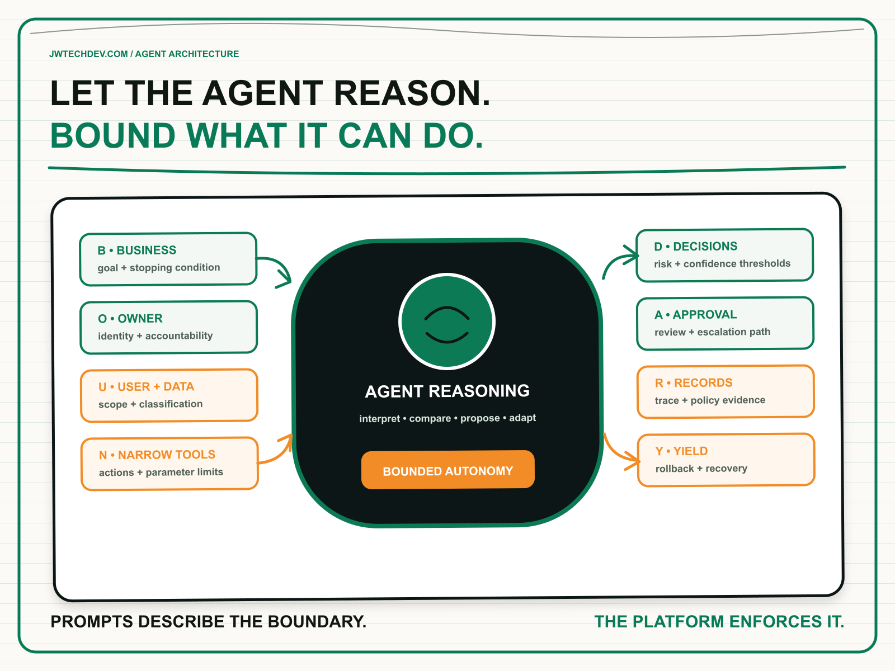

Agents handle ambiguity. Your architecture still needs boundaries.
An agent is useful because it can interpret an unclear request, choose a path, and adapt when conditions change. That flexibility belongs inside a deliberately rigid operating envelope. The model can reason through ambiguity. The architecture must make authority explicit.

Quick answer
Good agent architecture does not eliminate ambiguity. It contains it. Let the model interpret language, compare options, and propose a plan, but make identity, data access, allowed tools, approval thresholds, spending limits, evidence, and recovery deterministic wherever the consequence matters.
I use the BOUNDARY Contract: business objective, owner and identity, user and data scope, narrow tools, decision thresholds, approval paths, records, and yield or recovery. It defines where the agent may improvise and where the platform must enforce a rule.
The autonomy paradox
Traditional software follows explicit branches. An agent can interpret a request the team did not predict, decide which information matters, and select a tool dynamically. That is the value. It is also why the system cannot depend on the prompt as its only control surface.
AWS now makes the same distinction in its Well-Architected Agentic AI Lens. Its design principles call for specialized, bounded agents; end-to-end traces; versioned behavior; proportionate human oversight; and explicit contracts. The guidance also separates deterministic enforcement such as IAM, schema validation, and policy engines from probabilistic controls such as content filtering and behavioral evaluation.
The architectural mistake is to treat autonomy as a binary choice. A system is not simply manual or autonomous. One agent might answer a knowledge question without review, draft a customer response for approval, update a low-risk record within limits, and require a named human before moving money. Autonomy should change with the action, not with the enthusiasm of the demo.
The BOUNDARY Contract
B: Business objective and stopping condition. Define the job in operational terms: the user, desired outcome, success evidence, and conditions that force the agent to stop. “Help with invoices” is vague. “Explain an invoice using approved account data, but do not modify charges” creates an enforceable boundary.
O: Owner and operating identity. Name the business owner, technical owner, and identity under which the workload acts. Preserve the end-user identity when authorization depends on the person. A shared service account may be convenient, but it can erase the context needed to decide what a tool call should be allowed to do.
U: User and data scope. Declare which users, tenants, records, classifications, regions, and retention rules apply. The agent should retrieve only the data required for the task. This is where tenant isolation, row-level filtering, session boundaries, and privacy policy become architecture rather than documentation.
N: Narrow tools and parameter shapes. Expose the smallest useful action. Prefer `draft_refund_request` over a generic administrative endpoint. Validate schemas, restrict resources, and separate read, draft, approve, write, publish, and destructive operations. AWS AgentCore Gateway guidance recommends least privilege, fail-safe defaults, structured identity claims, and logged authorization decisions.
D: Decision thresholds. Classify actions by consequence, reversibility, confidence, amount, and policy sensitivity. Low-risk retrieval can proceed automatically. A reversible update may proceed below a limit. A legal commitment, payment, destructive action, or policy exception should cross a higher threshold.
A: Approval and escalation paths. Human review should be risk-tiered. Requiring approval for everything creates fatigue; requiring it for nothing creates unbounded autonomy. Give reviewers the proposed action, supporting data, expected consequence, deadline, and fallback. Record who approved what and when.
R: Records and traceability. Capture the user request, agent version, model, retrieved evidence, policy decision, tool parameters, result, latency, cost, approval, and final outcome in one trace. Logs are not merely for debugging. They are the evidence needed to investigate behavior, evaluate quality, and improve policy.
Y: Yield, rollback, and recovery. Define what happens when confidence falls, a tool fails, a limit is exceeded, or the action produces the wrong result. The system needs timeouts, bounded retries, compensating actions, rollback where possible, a kill switch, and a clean handoff to a human who receives the context.
Prompts describe the boundary. Platforms enforce it.
A system prompt can tell an agent not to issue a refund over a threshold. That instruction is useful, but it is probabilistic. The refund tool or policy layer should independently reject the request. A prompt can tell an agent to use only one customer’s records. The data path should still apply authorization and tenant filters.
Amazon Bedrock AgentCore reflects this layered model. IAM controls who can invoke and manage resources. Resource policies protect runtimes, gateways, and memory. Gateway policy can make authorization decisions about actions and conditions. Human approval handles consequential exceptions. Evaluations test behavior, while traces show what actually happened.
NIST’s Generative AI Profile reinforces the organizational side: higher-risk use can require additional human review, tracking, documentation, and management oversight. The practical takeaway is that governance cannot live only in a policy document. It must appear in the request path, the tool contract, the release process, and the operating evidence.
What to do next Monday
- Pick one agent action. Choose a real read, draft, update, payment, publish, or delete operation.
- Complete the BOUNDARY Contract. Write one sentence for each of the eight fields and identify any field without an owner.
- Move one rule out of the prompt. Enforce it with IAM, a policy engine, schema validation, data filtering, or the tool itself.
- Tier the action by risk. Define when it proceeds, when it pauses for approval, and when it must stop.
- Test a hostile and a broken path. Try prompt injection, excessive parameters, missing identity, a tool timeout, and an unavailable reviewer.
- Inspect the evidence. Confirm that one trace can reconstruct the request, decision, action, approval, outcome, and cost.
- Practice recovery. Revoke access, disable the tool, roll back the configuration, and hand the case to a human with context.
The strongest agent systems do not choose between flexibility and control. They put flexibility inside a control envelope the organization can explain, operate, and change.
I will be at AFROTECH in Houston November 2-6. If you are building an enterprise AI platform, global delivery organization, or technical go-to-market motion, I would be glad to compare notes.
Sources checked
- AWS Well-Architected Agentic AI Lens: design principles
- AWS Agentic AI Lens: goal alignment and manipulation prevention
- AWS Agentic AI Lens: human-in-the-loop for critical decisions
- Amazon Bedrock AgentCore Gateway: fine-grained access control
- Amazon Bedrock AgentCore: resource-based policies
- NIST AI 600-1: Generative Artificial Intelligence Profile
Give agent autonomy an operating envelope
Explore more practical frameworks for enterprise AI, cloud architecture, governance, and technical leadership.
Get the free starter kit